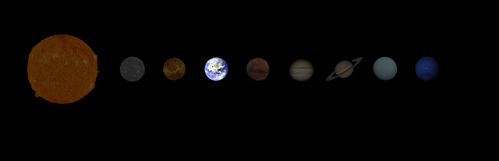

EARTH
Earth is the third planet from the Sun. At present, it is the only place in the Universe known to have life.
OVERVIEW

Sun — Mercury — Venus — Earth — Mars — Jupiter — Saturn — Uranus — Neptune
- Third planet from the Sun. Third of the four rocky planets (Mercury, Venus, Earth, Mars)
- Only place we know of so far where life exists
- Only planet with liquid water on its surface. Water covers more than 70% of the surface, making it an "ocean planet"
- Atmosphere mostly nitrogen (78%) and oxygen (21%) - perfect for us to breathe and live
- Surface very geologically active - mountains, valleys, canyons, etc.
- Click here to open 3D model
FACTS
ONE OF A KIND
Earth is the only place that we currently know has life in the Universe. Earth is home to a wide and diverse variety of life forms ranging from simple single-celled organisms to complex life forms such as human beings. Despite this, there is a very high probability of life existing elsewhere in the Universe (even in our own galaxy, The Milky Way, alone!) leading to the famous Fermi paradox.
PROTECTIVE FIELDS AND GASES
Resulting from convection currents of molten iron and nickel in its outer core, Earth has a powerful magnetic field circling the planet. It shields life on Earth from solar winds - deadly streams of particles emitted from the Sun. It is these particles, and the way they interact with our magnetic field, that create the auroras (Northern and Southern lights) on Earth. Earth's atmosphere also has the right composition for life to exist and flourish.
THE ONLY PLANET NOT NAMED AFTER A GOD
Earth is the only planet in the Solar System that was not named after a God from Greek or Roman mythology. The name Earth is believed to have come from the Old English and Germanic word for "ground".
IT WAS ONCE THOUGHT TO BE THE CENTRE OF THE UNIVERSE
Referred to in astronomy as the "geocentric" (earth-centred) model, this was the prevailing belief for thousands of years. As viewed from Earth, the stars in the night sky seem to be fixed as if they have been projected onto a "celestial sphere" with Earth at the centre of the sphere. The Earth also seems to be unmoving from our perspective. The title of the first person to reject the geocentric model is often credited to Polish astronomer Nicolaus Copernicus, however a Sun-centered model of the Solar System was proposed as far back as 200 B.C. by Aristarchus of Samos (an Ancient Greek astronomer). Today we know that Earth has no special place in the Universe.
ITS ROTATION IS GRADUALLY SLOWING
The rotation of Earth around its own axis appears to be slowing down as time goes on! That means that a day on Earth was shorter in the past than it is today.
Scientists estimate that a day on Earth a century (100 years) ago was about 1.7 miliseconds (1.7 thousandths of a second) shorter than it is today. This is believed to be caused by the Moon affecting (slowing down) the Earth's rotation.
IT IS THE DENSEST PLANET IN THE SOLAR SYSTEM
At 5.51 g/cm^3, Earth has a similar density to the other rocky planets, with the exception of Mars (whose average density is slightly lower, at 3.93 g/cm^3).
Density is a measure of the mass (which can be thought of as the amount of material) contained within a given volume (the mass/volume ratio). A heavy metallic ball, for example, has a larger density than a soft, sponge ball of equal volume.
LIFE ON EARTH AND THE FUTURE OF HUMANITY
- Our home planet is the only place in the Universe we know to contain life of any form. We don't know whether or not life exists elsewhere, but scientists are always trying to find signs that it does (or, at least, could!)
- Life on Earth (despite being threatened and, at times, almost completely wiped out, over the course of our planet's history) has evolved over billions of years to create the beautiful, biologically diverse planet we inhabit today.
- The conditions on Earth are not the same as they are on other planets in the Solar System (or indeed on most other planets in other solar systems – so-called ‘exoplanets’) but they are just right for life to exist. It turns out that Earth is just the right distance away from the Sun for liquid water to exist on its surface (it exists in what scientists call the ‘Goldilocks zone’). Any further away and the water would freeze into ice. Any closer and the sun’s heat would cause it to boil away. Liquid water is an essential ingredient for life as we know it. Without water, there is no life. And where there is water, there is always a possibility of life!
- Our planet has an atmosphere with oxygen – a gas needed by almost all living things, and gravity strong enough to hold onto it. Our atmosphere has an ozone layer which protects us against harmful UV (ultraviolet rays) from the Sun. A powerful magnetosphere (a magnetic field surrounding the planet) protects us from blasts of deadly radiation from the Sun. Our planet is remarkable. Yet we seem to have no special place in the Universe.
- The possibility (and indeed probability) for the existence of life elsewhere in the Universe has undoubtedly captured the imaginations of humans for as long as we have been around. Ever since we started to use radio waves for communication in the early 1900s, we have pointed our telescopes and our receivers at the stars in the hope of finding other companions throughout the cosmos.
- To date, we have found no hard evidence for the existence of life outside of Earth; though our search has become increasingly sophisticated, not to mention humbling. Are we alone in the Universe? Maybe. But according to the SETI (search for extra-terrestrial intelligence) Institute, the number of potentially habitable planets in our galaxy alone (which is just one of hundreds of billions in the known Universe) is close to one hundred billion (100,000,000,000). That’s one hundred thousand million. Such a number is extremely difficult for the human mind to comprehend. It is not unreasonable, then, to imagine that even just a tiny fraction of that number could be home to intelligent beings, like us humans. Many may have lived and thrived well before humans on Earth and could be capable of interstellar travel (travel between the stars). But so far we have heard nothing. No messages, no visits to Earth – neither from alien beings nor their probes. This lack of evidence for the existence of other civilisations despite the incredible probability of their existence is referred to as the Fermi paradox, named after the Italian-American physicist Enrico Fermi.
- Though we are yet to hear anything back as of the present, humans have sent a few messages into space in an attempt to make contact with life elsewhere, or at the least inform them of our existence and location. In 1974, the ‘Arecibo’ message was sent to M13 – a star cluster located around 22,000 light years from Earth. 1 light year is the distance travelled by light in a time of 1 year – it’s about 63,000 times the Sun-Earth distance. The message contains information such as the numbers 1 to 10, the atomic numbers of basic chemical elements like hydrogen, carbon and nitrogen, the structure of DNA, a graphical figure of an average-sized human male and female and a graphical depiction of the Solar System, indicating which planet the message came from.
- Of course, the messages are not written in English, nor in any other language of human invention for that matter. They must be written in a language that can be understood throughout the Universe – mathematics. The messages, which are in the form of symbolic representations, must be decoded before their meaning can be deduced, though any intelligent life-form should have the capability of doing this.
- The Arecibo message was not the only attempt to communicate with aliens. Since then, the Voyager space probes (Voyagers 1 and 2, both launched in 1977) both carried ‘The Golden Record’ – a small metallic record containing sounds and images selected to illustrate life and culture on Earth. The sounds include recordings of humans talking in a number of different languages, greetings, popular music from the time, as well as various animal sounds. Printed on the record are instructions for how to play it, in addition to depictions (similar to those in the Arecibo message) of a map of the Solar System, Earth, the hydrogen atom, and so on.
- Opinions over whether or not it was wise of our species to send such messages into space remain divided, but most agree that receiving communication from outsiders would have serious implications for humanity and our place in the Universe.
- Life on Earth at present is comfortable. Our home is teeming with life of various and often wonderful forms. But our future is at question. As humans we face many risks that could one day make us an extinct race – global warming, overpopulation, biology (e.g. viruses), celestial events (e.g. asteroid collisions or gamma-ray bursts), tectonic events, volcanic activity. Not to mention nuclear and biological warfare.
- Even if we survive well into the future and are not wiped out by any of the above, we will still need to relocate and cannot stay on the Earth. The reason for this is that our Sun, like other stars, doesn’t stay the same forever, but instead goes through a life cycle consisting of various phases. Scientists estimate that the Sun is currently about half-way through its 10-billion-year life cycle. Billions of years from now, the sun’s outer layers will expand into space and eventually engulf our home planet. Our oceans of liquid water will boil away long before then, and the conditions will become unsuitable for life. The only chance of a future is for us to establish life elsewhere. Where exactly? You may ask.
- There are a number of promising locations in our solar system – planets and their moons, that could one day be colonised by humans. It is not possible to do this with our current technology, but it may well be in the future. Elon Musk, founder of SpaceX, has claimed that he’ll send a million people to Mars by the year 2050, and NASA also have plans to colonise our planetary neighbour in the not-so-distant future. Why be limited to our own Solar System? Is there a possibility of humans travelling to other stars in the future? Yes – but it’s very unlikely. This time not so much due to a lack of our technology, but rather due to the mind-boggling scale of the Universe. The nearest star to Earth (apart from the Sun!) is located 4.2 light years away. That means that it takes light – the fastest thing in the Universe – a time of 4.2 years just to travel between the Earth and our nearest star.
- And what’s more is that light is not only the fastest thing in the Universe, it also sets the cosmic speed limit. The laws of physics state that nothing inside the Universe can travel at a speed greater than the speed of light. Even if we could travel at 1% of that speed (around 67 million miles per hour, which is still well outside the realm of current technology) it would take over 400 years to get there. A person setting out in the year 1620 (around 20 years before Isaac Newton was born) on a futuristic spaceship that was capable of travelling at that speed would only have reached Proxima Centauri (our nearest star) in the year 2020. And if they left the star today, they would not get back home until the year 2422.
PALE BLUE DOT
The image you see here was taken by the Voyager 1 space probe at a distance from Earth of about 6 billion kilometres (40 times the Earth-Sun distance). The well known Carl Sagan, an American astronomer and science communicator (1934-1996), famously made the following comment regarding the photograph.

Look again at that dot. That's here. That's home. That's us. On it, everyone you love, everyone you know, everyone you ever heard of, every human being who ever was, lived out their lives. The aggregate of our joy and suffering, thousands of confident religions, ideologies, and economic doctrines, every hunter and forager, every hero and coward, every creator and destroyer of civilization, every king and peasant, every young couple in love, every mother and father, hopeful child, inventor and explorer, every teacher of morals, every corrupt politician, every "superstar," every "supreme leader," every saint and sinner in the history of our species lived there - on a mote of dust suspended in a sunbeam.
The Earth is a very small stage in a vast cosmic arena. Think of the rivers of blood spilled by all those generals and emperors so that, in glory and triumph, they could become the momentary masters of a fraction of a dot. Think of the endless cruelties visited by the inhabitants of one corner of this pixel on the scarcely distinguishable inhabitants of some other corner, how frequent their misunderstandings, how eager they are to kill one another, how fervent their hatreds.
Our posturings, our imagined self-importance, the delusion that we have some privileged position in the Universe, are challenged by this point of pale light. Our planet is a lonely speck in the great enveloping cosmic dark. In our obscurity, in all this vastness, there is no hint that help will come from elsewhere to save us from ourselves.
The Earth is the only world known so far to harbor life. There is nowhere else, at least in the near future, to which our species could migrate. Visit, yes. Settle, not yet. Like it or not, for the moment the Earth is where we make our stand.
It has been said that astronomy is a humbling and character-building experience. There is perhaps no better demonstration of the folly of human conceits than this distant image of our tiny world. To me, it underscores our responsibility to deal more kindly with one another, and to preserve and cherish the pale blue dot, the only home we've ever known.
.jpg)